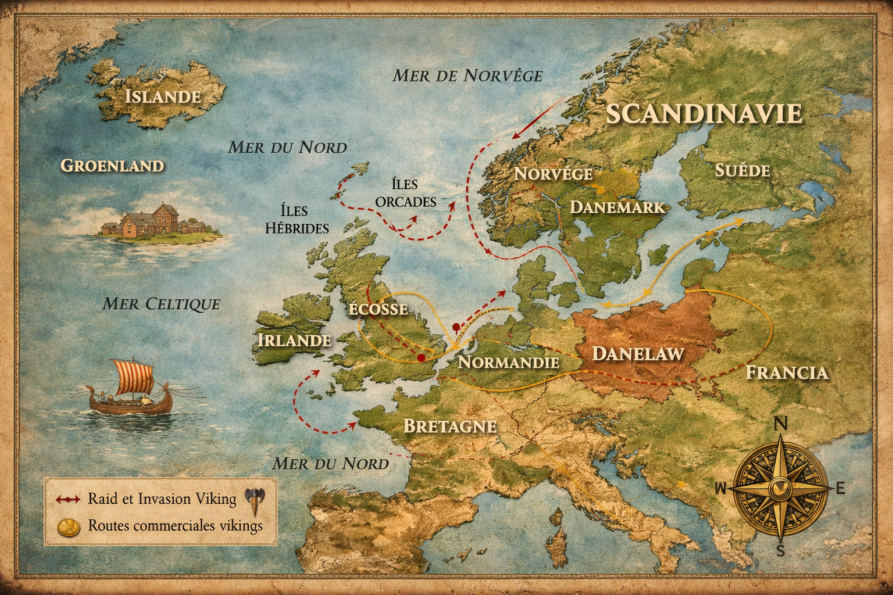
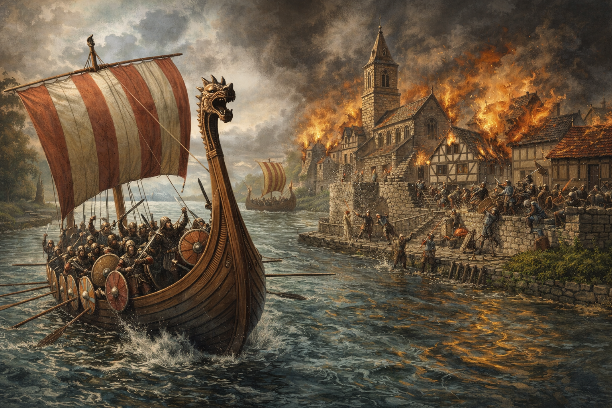

Le IXe siècle voit la transformation des Vikings : de raiders opportunistes, ils deviennent
des forces répétées et organisées, capables de frapper les grands royaumes de l’Ouest,
de remonter les fleuves, et même de conquérir puis s’installer.
C’est aussi le siècle où apparaissent des formes d’équilibre : traités, frontières,
et colonisations durables.

Illustration : routes vikings en Europe de l’Ouest
Repères chronologiques
Période
Événement
Zone
Type
Mot-clé
830–850
Raids fréquents en Europe de l’Ouest
Royaumes francs, anglo-saxons
Guerre / Économie
Campagnes, Danegeld
865
Grande Armée païenne
Angleterre
Guerre majeure
Conquête + installation
878
Victoires d’Alfred le Grand
Wessex
Guerre / Diplomatie
Traité, coexistence
886
Création du Danelaw
Angleterre
Politique / Territoire
Société hybride
874
Colonisation de l’Islande
Atlantique Nord
Colonisation
Reykjavík, Althing
830–850 — Raids fréquents en Europe de l’Ouest
Du raid isolé à la campagne répétée
Entre 830 et 850, les attaques se multiplient et gagnent en ampleur.
Les Vikings ciblent désormais villes marchandes, bourgs prospères et
villages agricoles riches : on passe d’expéditions ponctuelles à des opérations répétées.
Les drakkars remontent la Seine, la Loire, le Rhin ou la Tamise,
s’engouffrant loin à l’intérieur des terres. Le commerce est perturbé, les défenses locales dépassées :
les armées lourdes et lentes peinent à répondre à des assaillants mobiles.
Tactique : le “raid éclair”
Frapper à l’aube, rapidement, avec violence.
Tout emporter (butin, vivres, captifs).
Disparaître avant l’arrivée des renforts.
Certains souverains préfèrent payer (le célèbre Danegeld) pour acheter une paix fragile.
Mais cette solution peut renforcer l’appétit viking : si payer marche une fois, pourquoi s’arrêter ?

Illustration : drakkars remontant un fleuve
Effets dans le jeu (simulation GLP)
Stat / Système
Variation
Explication
Richesse
+25%
Accumulation massive de butin sur deux décennies
Réputation de peuple guerrier
+30%
Terrorise l’Europe et ouvre des options “intimidation”
Relations diplomatiques
-20%
Hostilités intensifiées
Technique militaire
+15%
Perfection des tactiques de raid
Économie scandinave
+10%
Afflux de richesses stimule commerce local
865 — Arrivée de la Grande Armée païenne en Angleterre
En 865, tout change : une véritable force d’invasion débarque en Angleterre de l’Est.
Les chroniqueurs la nomment la Grande Armée païenne. Elle rassemble plusieurs milliers
de guerriers menés par des figures légendaires, notamment les fils de Ragnar Lodbrok :
Ivar le Désossé, Halfdan et Ubbe.
Les Vikings établissent des camps fortifiés, préparent une guerre longue, et profitent des divisions
entre royaumes anglo-saxons (Northumbrie, Mercie, Est-Anglie, Wessex).
Ils s’emparent d’York (866), puis l’Est-Anglie (869) tombe.
Le roi Edmund est capturé et exécuté (il deviendra plus tard une figure de saint martyr).
Seul le Wessex, bientôt sous la houlette d’Alfred, parvient à tenir tête. L’Angleterre vit alors
son plus grand péril depuis l’époque romaine.
Illustration : Grande Armée païenne en Angleterre
Effets dans le jeu (simulation GLP)
Stat / Système
Variation
Explication
Contrôle territorial
+40%
Conquête de vastes régions d’Angleterre
Puissance militaire
+35%
Armée organisée et disciplinée
Débloque
Contrôle régional (York, Est-Anglie)
Nouvelles mécaniques de gestion des territoires
Population viking en Angleterre
+20%
Début de la colonisation
Relations avec Angleterre
-40%
État de guerre totale
878 — Victoires d’Alfred le Grand contre les Vikings
Après une décennie de succès, les Vikings rencontrent un adversaire majeur : Alfred, roi du Wessex.
En janvier 878, Guthrum surprend Alfred pendant les fêtes de Noël, le forçant à fuir dans les marais du Somerset.
Alfred se cache, recrute, puis frappe : à Ethandun (Edington), il inflige une défaite décisive.
Assiégés à Chippenham, affamés, les Vikings négocient. Guthrum accepte la conversion au christianisme
(Alfred devient son parrain) et une frontière est tracée entre territoires anglo-saxons et zones vikings.
C’est la base du futur Danelaw.
Impacts historique :
Les Vikings apprennent qu’ils ne sont pas invincibles.
La conquête permanente exige fortifications et administration, pas seulement la force.
La diplomatie devient un outil aussi important que la guerre.
Effets dans le jeu (simulation GLP)
Stat / Système
Variation
Explication
Expansion viking
-15%
Arrêt de la conquête du Wessex
Relations diplomatiques
+10%
Début de la négociation plutôt que guerre totale
Christianisation
+5%
Conversion forcée de certains chefs
Consolidation territoriale
+10%
Besoin de fortifier les territoires existants
Prestige d’Alfred
En hausse
Impact moral et réputationnel
886 — Création du Danelaw
En 886, Alfred et Guthrum signent un accord qui divise l’Angleterre.
Le territoire viking devient le Danelaw, régi par des lois et coutumes scandinaves.
Il couvre environ un tiers de l’Angleterre : Northumbrie (York), Est-Anglie et parties de la Mercie.
La frontière suit approximativement une ligne Londres → Chester.
Les colons s’installent durablement, fondent des fermes, des villes, et se mêlent à la population locale.
De nombreux toponymes anglais gardent une trace viking : -by (village), -thorpe (hameau),
-toft (propriété).
York devient un centre majeur reliant Scandinavie, Angleterre et continent.
Les artisans vikings (métal, bois) prospèrent. Le Viking n’est plus seulement raider :
il devient colonisateur et bâtisseur.
Effets dans le jeu (simulation GLP)
Stat / Système
Variation
Explication
Territoire stable
+30%
Zone permanente sous contrôle viking
Développement agricole
+20%
Installation de fermiers vikings
Commerce
+25%
York devient un hub commercial
Intégration culturelle
+15%
Fusion anglo-scandinave
Revenus fiscaux
+15%
Territoire productif administré
874 — Colonisation de l’Islande
En 874, Ingólfr Arnarson et son frère adoptif Hjörleifr Hródmarsson deviennent
les premiers colons permanents d’Islande. Ingólfr jette ses piliers sacrés par-dessus bord
et promet de s’installer là où ils échoueront. Ils arrivent dans une baie “fumante”
(sources chaudes) et la nomment Reykjavík : “Baie des Fumées”.
Une colonisation unique : presque sans conflit
Contrairement à l’Angleterre ou à l’Irlande, l’Islande est presque inhabitée
(quelques moines irlandais ermites). Les Vikings y bâtissent une société nouvelle,
portée par la liberté, la recherche de terres, et parfois la fuite d’un pouvoir norvégien
plus centralisé (Harald Ier).
Population et organisation politique
Entre 874 et 930, environ 20 000 à 30 000 personnes s’installent,
majoritairement norvégiennes, mais aussi celtes (souvent esclaves ou épouses irlandaises/écossaises).
En 930, ils créent l’Althing, l’une des plus anciennes assemblées parlementaires connues :
preuve que l’histoire viking ne se réduit pas à la guerre.